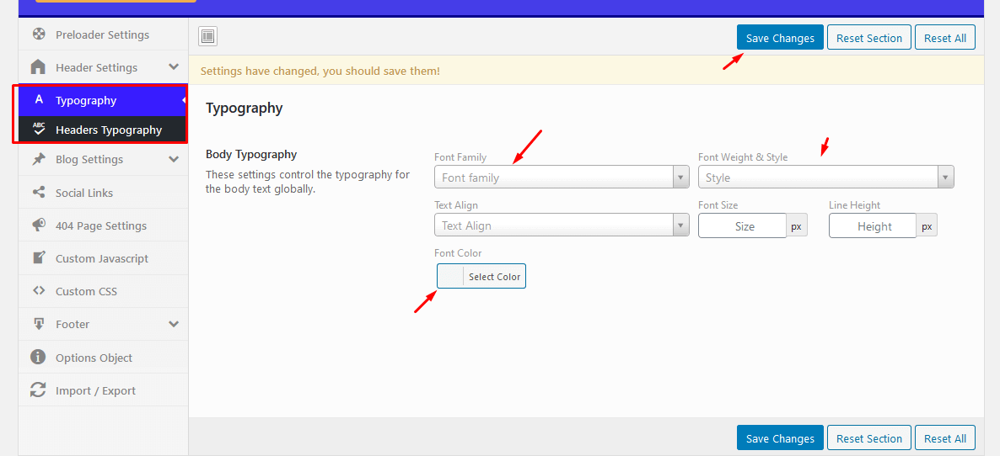
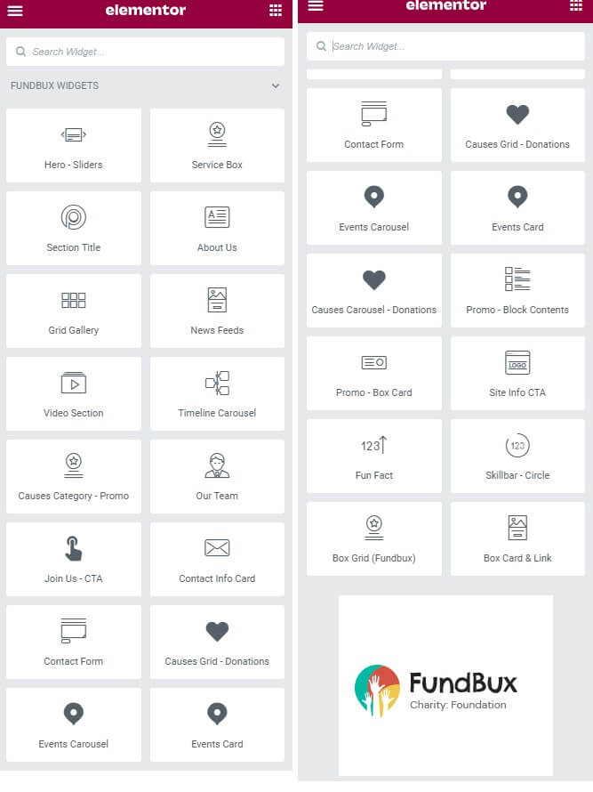

Kyanda
Charity & Foundries WordPress Theme
- Latest Version: 1.3.1
- Latest Update: 26/01/2022
- By: ModinaTheme
- Demo: https://codexpeed.com/Kyanda-wp/
- Email: modinatheme@gmail.com
Requirements
You need at least WordPress version 5.0+ installed for this theme to work properly. It is strongly recommended that you always use the latest stable version of Wordpress to ensure all known bugs and security issues are fixed. Other requirements:
- PHP version 5.6+ or greater. But for maximum speed, we recommend to use PHP version 7+.
- MySQL version 5.0.15 or greater.
Getting Started
WordPress Theme Installation
WordPress theme is simply a group of files, called template, bundled together that, when activated in CMS, determine the look and basic function of your site. By using professional modinatheme theme, you can have your site up and running with a new design - pretty fast. Theme installation is very easy process. Especially when you've chosen the theme you want to use, you'll need to install it into your WordPress website. You'll have the following two choices, as you did when adding new plugins:
- You can add the theme directly from within the WP Admin, using "Upload Theme" option. From Admin Panel go the following path Appearance -> Themes -> Add New -> Upload Theme and select the zip theme, then click Install Now.
- If your server is not set up properly or you have any problems, you'll have to extract and then upload the theme by hand. Using your favorite FTP client tool upload theme folder into the folder path /wp-content/themes/ on your server and active it from admin panel.
Note: On your WordPress site, the wp-content/themes folder holds all your themes. Each theme you install gets its own subfolder. All of a theme's style sheets and template files reside inside the theme's folder.
Kyanda Theme Installation Process :
Follow These Steps in Order to Install a New WP Theme
First Step:
Second Step:
Essential Plugins and Installation:

After successful theme installation, you'll see the above notice box that you need to install essential plugins. You can click on "Begin installing plugins" or follow the following step.
Install above essential plugins by easy 2 step
Figure 1: Required plugins installation windowThe installing process status will be shown in your browser. It may takes a few minutes, so please be patient.
After completing the activation and no bug occurred, you will see status of all plugins is activated.
Demo Content Import
Import Sample Data: Import Sample Data: If you want to use demo data for your website then you need to install sample data. From menu choose Tools -> Import -> WordPress. Click WordPress then you will see the "Import WordPress" option which allows you to upload .xml file from Kyanda/inc/demo Content folder. If this tool not be installed you have to install "WordPress Importer" plugin manually.
Loading Demo Content
If you want to upload demo content (posts,pages,menu...) to your website, browse Demo Sample Data folder and find the xml file. After that use WordPress import tool to upload this xml file to your website.
For more information about importing content in WordPress; click here
Note: If you aren't using a fresh WordPress install, I recommend you to reset your database before loading demo content. You can do this easily with this plugin. After doing this don't forget to activate the theme and required plugins again before uploading the xml file...
After the demo installation, you should set up sidebars ,select a front page and set up Appearance->Theme Settings manually. Please read the following sections for more information.
Upload WordPress installer:
Select demo xml file and click "update file and import"
Don't forget to check "Download and import attachments" box and click "submit"

Import Demo Content - Manually (Row)
- 1: Choose XML (All Contents)
You need to choose XML file from "contents.xml" folder under "Demo Content" folder. - 2: Choose WIE or JSON
You can skip this because we don't have this type of demo data file. - 3. Choose DAT (Customizer Settings)
Choose DAT file. - 4.Elementor Page Builder
you need to choose JSON file from "elementor-page" folder under "Demo Content" folder. - 5.Redux Framework - Theme Options
you need to choose JSON file from "settings.json" folder under "Demo Content" folder. - 6.ACF Pro - Plugin - Page Options
you need to choose JSON file from "metabox.json" folder under "Demo Content" folder.

Setup Permalink(Required)
Make sure to configure permalink. By default WordPress uses web URLs which have question marks and lots of numbers in them; however, WordPress offers you the ability to create a custom URL structure for your permalinks and archives. This can improve the aesthetics, usability, and forward-compatibility of your links. From WP admin panel go to the following path Settings->Permalik then select (Post name).
Menu Settings
Its an important part of Kyanda Theme Installation process. Select your menu for menu location. Go to Dashboard-> Appearance-> Menus then click on Manage Location and select menu for 2 locations. menu for "Primary Menu"? location is mandatory. You can follow below screenshot.
Set Home Page (Required):
Set Static Home Page(Required): WordPress shows blog posts by default as the front page. If you want to look like demo Kyanda then you need to set Home Page. See the way how to set Static Home Page Settings->Reading . From here select static page then for Front page select Home and blog page select Blog.

One Click Demo Import:
Import Sample Data: Kyanda Gives you one click demo import option for get this you need to install one click demo import plugin (click here) . After Install This plugin nedd to follow few steps for import demo data
After choosing demo file, click on Import Demo Data button and it will take several minutes to import.
Theme Option
Kyanda used Redux Framwork Plugin for Theme Options. All options are easily readable and configurable.It's very easy to use.
2.Typography

After changing the settings, Click on Save Changes button.
Custom Post - Event
Kyanda Having only One Custom Post Type - Event
Add New Event
- 1. Enter event title
- 2. Write text for event content
- 3. Upload event image
- 4. add a event category
- 5. and Publish it
- It's Elementor Addon - Section Widgets Event
Elementor Addon - 20+ Custom Wigets

How to edit with Elementor Page Builder
-
Hero

-
Donation - Causes Grid

-
Blog Post Widgets
-
Contact Form 7 Short Code
MailChimp - Form
MailChimp Plugin for WordPress Theme Form Code. First Connect with your MailChimp Account with API. Check The MailChimp Form Code.txt file from Main Files Folder.
Then, Paste the form short code where you want to show.
Page Settings - ACF Pro
-
Page Options - Bottom of page
Logo Change ( Homepage or any page)/ Want Specific Custom Logo for any pages - Page Settings
Changelog
Version 1.3.0 - 22.01.2022
==========================
- ModinaCore Updated
- Causes Owl Carousel Fixed
Version 1.3.0 - 22.01.2022
==========================
- WPML Translate Full Support
- RTL Support
Version 1.1.1 - 28.12.2021
========================
- Fixed Preloader Issues
- Fixed CSS Issues
- Remove Blog Ads Options
- Added Blog Single Options
- Demo Updated
Version 1.1.0 - 27.12.2021
========================
- Child Theme Added
- SCSS & CSS Some Issues Fixed
- Theme Options Update - Heading Fonts
- MailChimp - MC4WP Plugin Support
- Online Doc Updated
- Demo Updated
Version 1.0 - 16.12.2021
========================
- Initial Release
Source & Credits
Thank You
Once again, thank you so much for purchasing this product. As I said at the beginning, I'd be glad to help you if you have any questions relating to this product. No guarantees, but I'll do my best to assist. If you have a more general question relating to this product on ThemeForest, you might consider visiting the forums and asking your question in the "Item Discussion" section.